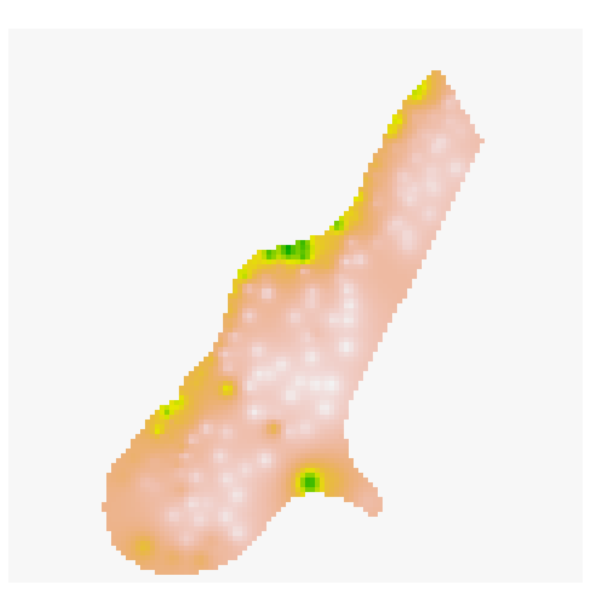
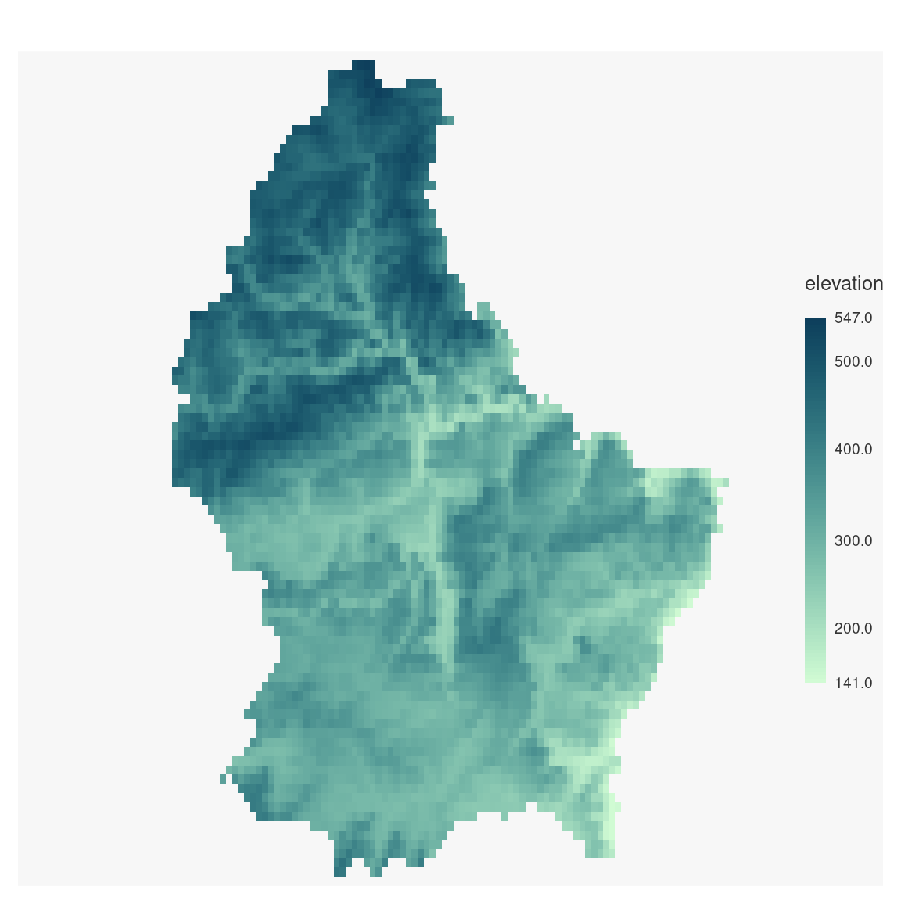
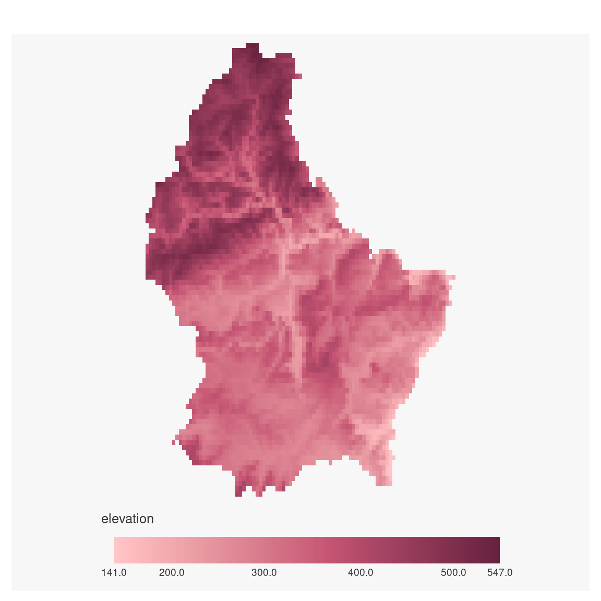
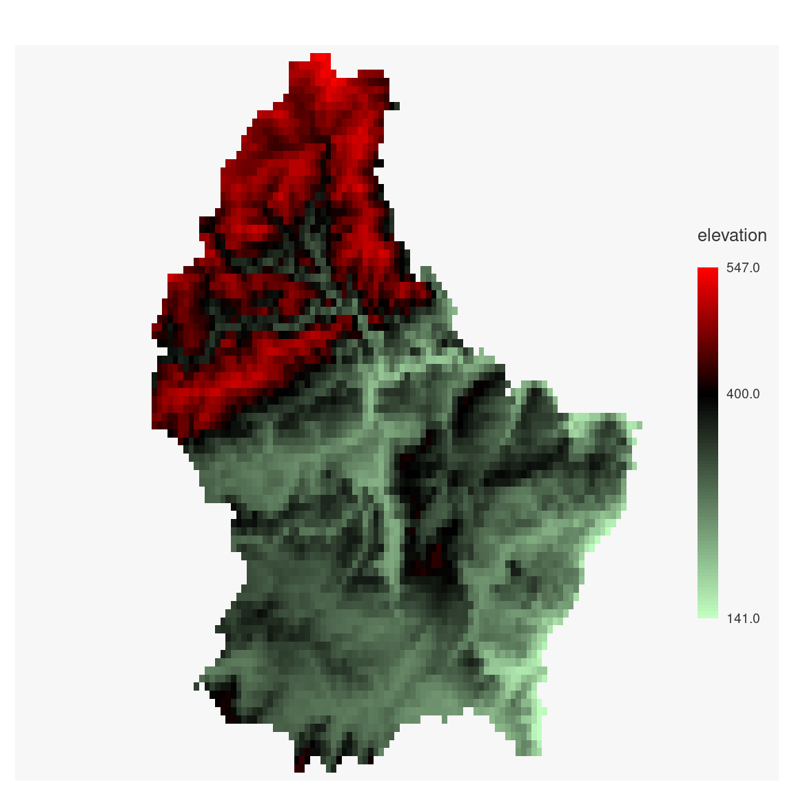
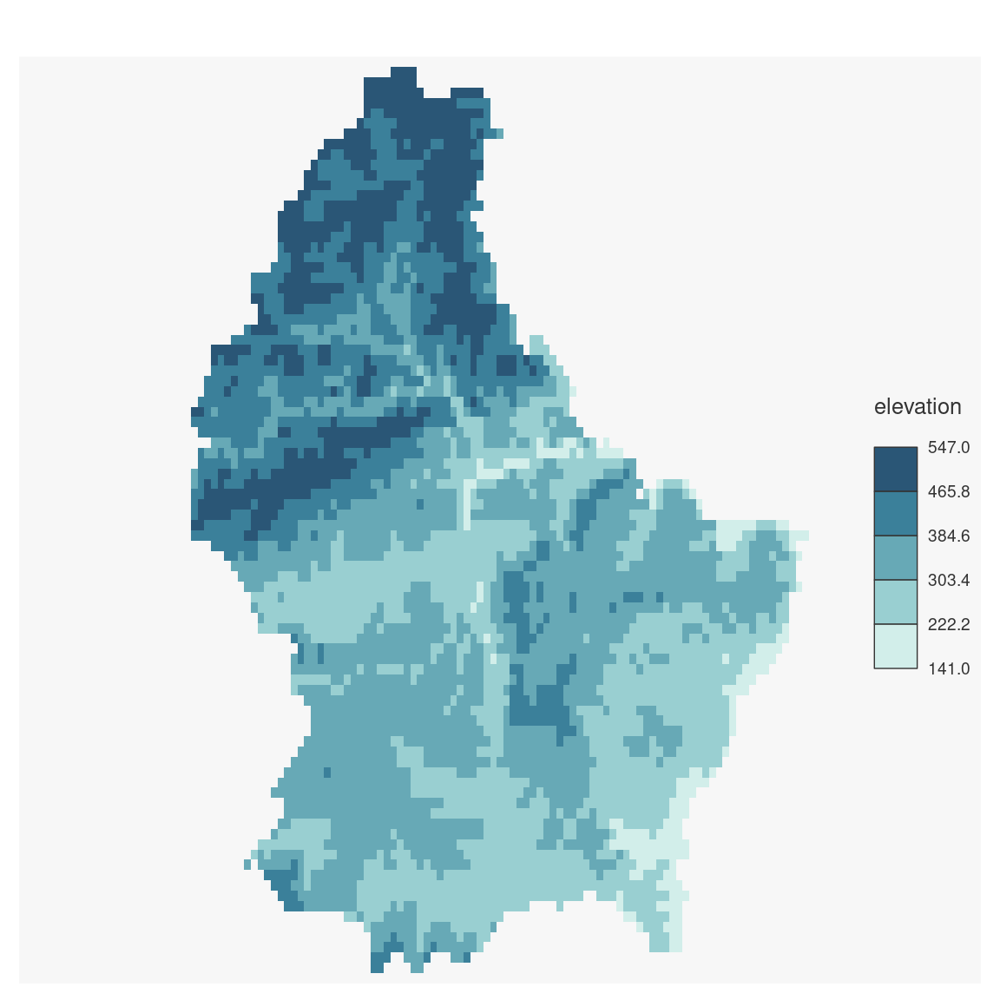
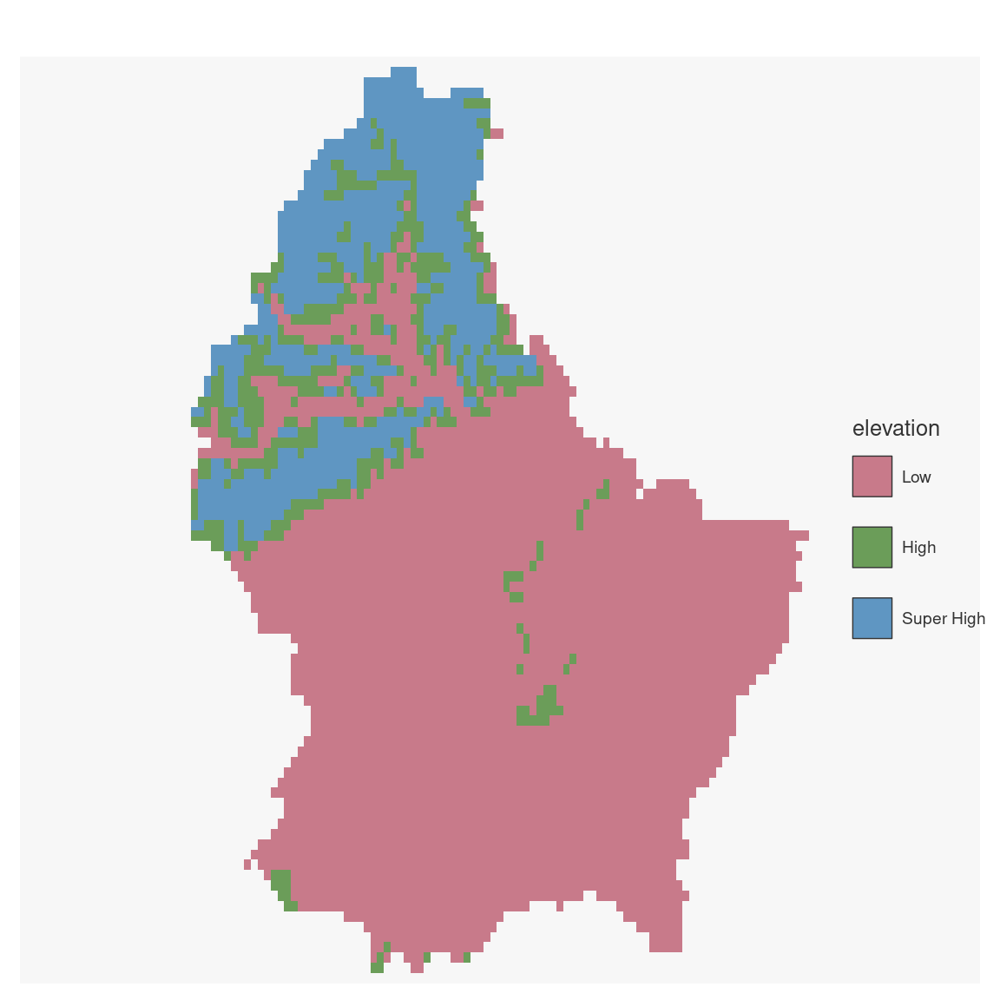

Plot a raster object (SpatRaster from terra).
Usage
mf_raster(
x,
type,
nbreaks,
breaks = "equal",
val_order,
pal,
expandBB = rep(0, 4),
alpha = 1,
rev = FALSE,
leg_pos = "right",
leg_title = names(x),
leg_title_cex = 0.8,
leg_val_cex = 0.6,
leg_val_rnd = 1,
leg_frame = FALSE,
leg_frame_border = getOption("mapsf.fg"),
leg_horiz = FALSE,
leg_adj = c(0, 0),
leg_box_border = "#333333",
leg_box_cex = c(1, 1),
leg_fg = getOption("mapsf.fg"),
leg_bg = getOption("mapsf.bg"),
leg_size = 1,
add = FALSE,
...
)Arguments
- x
a SpatRaster
- type
type of raster map, one of "continuous", "classes", or "interval". Default type for a numeric and categorial raster are "continuous" and "classes" respectively.
- nbreaks
number of classes
- breaks
either a numeric vector with the actual breaks (for type = "continuous" and type = "interval"), or a classification method name (for type = "interval" only; see mf_get_breaks for classification methods)
- val_order
values order, a character vector that matches var modalities
- pal
a set of colors or a palette name (from hcl.colors)
- expandBB
fractional values to expand the bounding box with, in each direction (bottom, left, top, right)
- alpha
if
palis a hcl.colors palette name, the alpha-transparency level in the range [0,1]- rev
if
palis a hcl.colors palette name, whether the ordering of the colors should be reversed (TRUE) or not (FALSE)- leg_pos
position of the legend, one of 'topleft', 'top','topright', 'right', 'bottomright', 'bottom', 'bottomleft', 'left' or a vector of two coordinates in map units (c(x, y)). If leg_pos = NA then the legend is not plotted. If leg_pos = 'interactive' click onthe map to choose the legend position.
- leg_title
legend title
- leg_title_cex
size of the legend title
- leg_val_cex
size of the values in the legend
- leg_val_rnd
number of decimal places of the values in the legend
- leg_frame
whether to add a frame to the legend (TRUE) or not (FALSE)
- leg_frame_border
border color of the legend frame
- leg_horiz
display the legend horizontally
- leg_adj
adjust the postion of the legend in x and y directions
- leg_box_border
border color of legend boxes
- leg_box_cex
width and height size expansion of boxes
- leg_fg
color of the legend foreground
- leg_bg
color of the legend backgournd
- leg_size
size of the legend; 2 means two times bigger
- add
whether to add the layer to an existing plot (TRUE) or not (FALSE)
- ...
bgalpha, smooth, maxcell or other arguments passed to be passed to
plotRGBorplot
Examples
if (require("terra")) {
# multi band
logo <- rast(system.file("ex/logo.tif", package = "terra"))
mf_raster(logo)
# one band
elev <- rast(system.file("ex/elev.tif", package = "terra"))
## continuous
mf_raster(elev)
mf_raster(elev,
pal = "Burg", expandBB = c(.2, 0, 0, 0),
leg_pos = "bottom", leg_horiz = TRUE
)
## continuous with colors and breaks
mf_raster(elev,
type = "continuous",
breaks = c(141, 400, 547),
pal = c("darkseagreen1", "black", "red")
)
## interval
mf_raster(elev,
type = "interval",
nbreaks = 5, breaks = "equal", pal = "Teal"
)
## classes
elev2 <- classify(elev, c(140, 400, 450, 549))
lev_evel <- data.frame(ID = 0:2, elevation = c("Low", "High", "Super High"))
levels(elev2) <- lev_evel
mf_raster(elev2)
mf_raster(elev2,
pal = c("salmon4", "olivedrab", "yellow3"),
val_order = c("Super High", "High", "Low")
)
}
#> Loading required package: terra
#> terra 1.7.71





